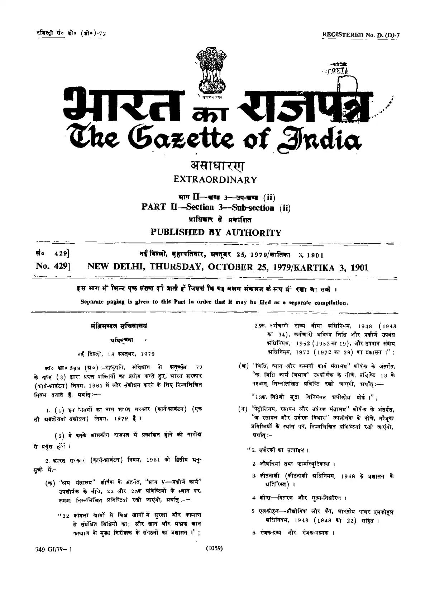
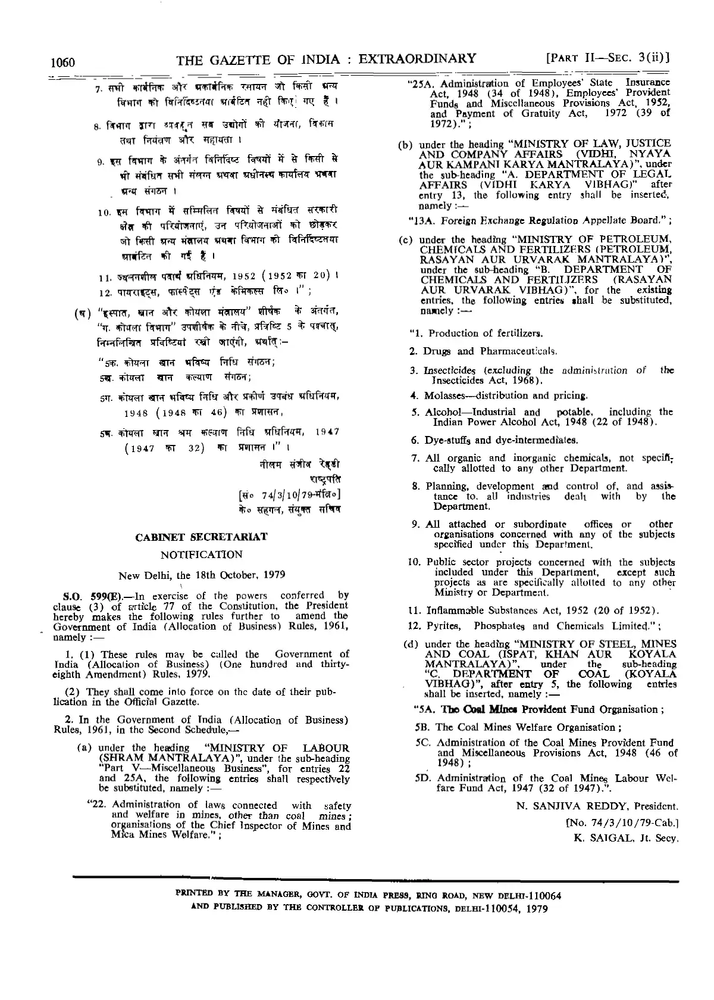

Amendment #138 (S.O. 599(E), 1979)
5 changes: 0 to the First Schedule, 5 to the Second Schedule. 4 applied1 not applied
The order, page by page
Page 1 of 2

Page 2 of 2

12345Schedule 2 › MINISTRY OF LABOUR › Part V Miscellaneous Business › entry 22
- 22. Administration of laws connected with safety and welfare in mines, other than coal mines organisations of the Chief Inspector of Mines and Mica Mines Welfare.
applied at schedule 2 › ministry MINISTRY OF LABOUR › part V › entry 22 in the Rules after #138
Schedule 2 › MINISTRY OF LABOUR › Part V Miscellaneous Business › entry 25A
- 25A. Administration of Employees' State Insurance Act, 1948 (34 of 1948), Employees' Provident Funds and Miscellaneous Provisions Act, 1952 and Payment of Gratuity Act, 1972 (39 of 1972).
not applied (the change could not be placed in the Rules as read; see How this document was read)
after Schedule 2 › MINISTRY OF LAW, JUSTICE AND COMPANY AFFAIRS › DEPARTMENT OF LEGAL AFFAIRS › entry 13
- 13A. Foreign Exchange Regulation Appellate Board.
applied at schedule 2 › ministry MINISTRY OF LAW. JUSTICE AND COMPANY AFFAIRS › department A › entry 13A in the Rules after #138
Schedule 2 › MINISTRY OF PETROLEUM, CHEMICALS AND FERTILIZERS › DEPARTMENT OF CHEMICALS AND FERTILIZERS
- 1. Production of fertilizers.
- 2. Drugs and Pharmaceuticals.
- 3. Insecticides (excluding the administration of the Insecticides Act, 1968).
- 4. Molasses-distribution and pricing.
- 5. Alcohol Industrial and potable, including the Indian Power Alcohol Act, 1948 (22 of 1948).
- 6. Dye-stuffs and dye-intermediates.
and 6 more
- 7. All organic and inorganic chemicals, not specifi cally allotted to any other Department.
- 8. Planning, development and control of, and assis tance to. all industries dealt with by the Department.
- 9. All attached or subordinate offices or other organisations concerned with any of the subjects specified under this Department.
- 10. Public sector projects concerned with the subjects included under this Department, except such projects as are specifically allotted to any other Ministry or Department.
- 11. Inflammable Substances Act, 1952 (20 of 1952).
- 12. Pyrites, Phosphates and Chemicals Limited.
applied at schedule 2 › ministry MINISTRY OF PETROLEUM, CHEMICALS AND FERTILIZERS › department B in the Rules after #138
after Schedule 2 › MINISTRY OF STEEL, MINES AND COAL › DEPARTMENT OF COAL › entry 5
- 5A. The Coal Mines Provident Fund Organisation
- 5B. The Coal Mines Welfare Organisation
- 5C. Administration of the Coal Mines Provident Fund and Miscellaneous Provisions Act, 1948 (46 of 1948)
- 5D. Administration of the Coal Mines Labour Welfare Fund Act, 1947 (32 of 1947).
applied at schedule 2 › ministry MINISTRY OF STEEL, MINES AND COAL (ISPAT, KHAN AUR KOYALA MANTRA- LAYA) › department C › entry 5A in the Rules after #138
How this document was read
Known issues
| Change | Issue | Known as |
|---|---|---|
| 2 | change 2: no entry 25A under schedule 2 › ministry MINISTRY OF LABOUR › part V | Entries not in the state |
From the Government of India (Allocation of Business) Rules, 1961 and their amendments, as published by the Cabinet Secretariat (cabsec.gov.in), read by orgpedia. The readings of the older scanned gazettes have known gaps.